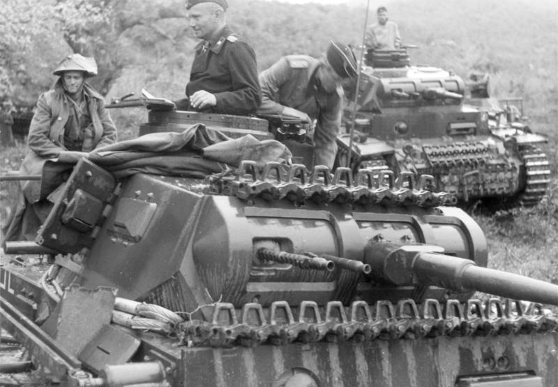
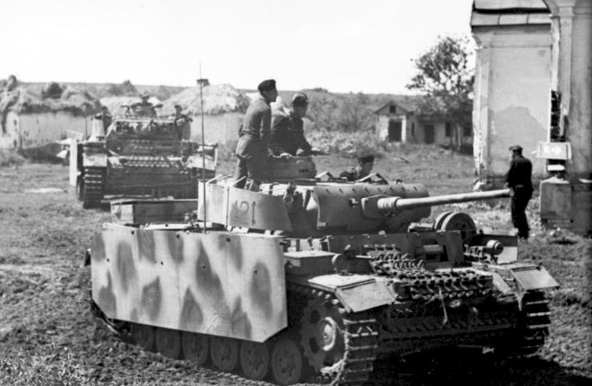

The Panzerkampfwagen III, commonly known as the Panzer III, was a medium tank developed in the 1930s by Germany, and was used extensively in World War II. The official German ordnance designation was Sd.Kfz. 141. It was intended to fight other armoured fighting vehicles and serve alongside and support the similar Panzer IV, which was originally designed for infantry support. However, as the Germans faced the formidable T-34, more powerful anti-tank guns were needed, and since the Panzer IV had more development potential with a larger turret ring, it was redesigned to mount the long-barrelled 7.5 cm KwK 40 gun. The Panzer III effectively swapped roles with the Panzer IV, as from 1942 the last version of the Panzer III mounted the 7.5 cm KwK 37 L/24 that was better suited for infantry support. Production of the Panzer III ceased in 1943. Nevertheless, the Panzer III's capable chassis provided hulls for the Sturmgeschütz III assault gun until the end of the war.

At the time, German (non-light) tanks were expected to carry out one of two primary tasks when assisting infantry in breakthroughs, exploiting gaps in the enemy lines where opposition had been removed, moving through and attacking the enemy's unprotected lines of communication and the rear areas. The first task was direct combat against other tanks and other armoured vehicles, requiring the tank to fire armour piercing (AP) shells.
On January 11, 1934, following specifications laid down by Heinz Guderian, the Army Weapons Department drew up plans for a medium tank with a maximum weight of 24,000 kg (53,000 lb) and a top speed of 35 km/h (22 mph). It was intended as the main tank of the German Panzer divisions, capable of engaging and destroying opposing tank forces, and was to be paired with the Panzer IV, which was to fulfill the second use: dealing with anti-tank guns and infantry strong points, such as machine-gun nests, firing high-explosive shells at such soft targets. Such supportive tanks designed to operate with friendly infantry against the enemy generally were heavier and carried more armour.
The direct infantry-support role was to be provided by the turret-less Sturmgeschütz assault gun, which mounted a short-barrelled gun on a Panzer III chassis.
Daimler-Benz, Krupp, MAN, and Rheinmetall all produced prototypes. Testing of these took place in 1936 and 1937, leading to the Daimler-Benz design being chosen for production. The first model of the Panzer III, the Ausführung A. (Ausf. A), came off the assembly line in May 1937; ten, two of which were unarmed, were produced in that year. Mass production of the Ausf. F version began in 1939. Between 1937 and 1940, attempts were made to standardize parts between Krupp's Panzer IV and Daimler-Benz's Panzer III.
Much of the early development work on the Panzer III was a quest for a suitable suspension. Several varieties of leaf-spring suspensions were tried on Ausf. A through Ausf. D, usually using eight relatively small-diameter road wheels before the torsion-bar suspension of the Ausf. E was standardized, using the six road wheel design that became standard. The Panzer III, along with the Soviet KV heavy tank, was one of the early tanks to use this suspension design first seen on the Stridsvagn L-60 a few years earlier.
A distinct feature of the Panzer III, influenced by the British Vickers Medium Mark I tank (1924), was the three-man turret. This meant that the commander was not distracted with another role in the tank (e.g. as gunner or loader) and could fully concentrate on maintaining awareness of the situation and directing the tank. Most tanks of the time did not have this capability, providing the Panzer III with a combat advantage versus such tanks. For example, the French Somua S-35's turret was manned only by the commander, and the Soviet T-34 originally had a two-man turret crew. Unlike the Panzer IV, the Panzer III had no turret basket, merely a foot rest platform for the gunner.
The Panzer III was intended as the primary battle tank of the German forces. However, when it initially met the KV-1 heavy tanks and T-34 medium tanks it proved to be inferior in both armour and gun power. To meet the growing need to counter these tanks, the Panzer III was up-gunned with a longer, more powerful 50-millimetre (1.97 in) gun and received more armour but still was at disadvantage compared with the Soviet tank designs. As a result, production of self-propelled anti-tank guns, as well as the up-gunning of the Panzer IV was initiated.
n 1942, the final version of the Panzer III, the Ausf. N, was created with a 75-millimetre (2.95 in) KwK 37 L/24 cannon, the same short-barreled low-velocity gun used for the initial models of the Panzer IV and designed for anti-infantry and close-support work. For defensive purposes, the Ausf. N was equipped with rounds of HEAT ammunition that could penetrate 70 to 100 millimetres (2.76 to 3.94 in) of armour depending on the round's variant, but these were strictly used for self-defence.
The Panzer III Ausf. A through C had 15 mm (0.59 in) of rolled homogeneous armour on all sides with 10 mm (0.39 in) on the top and 5 mm (0.20 in) on the bottom. This was quickly determined to be insufficient, and was upgraded to 30 mm (1.18 in) on the front, sides and rear in the Ausf. D, E, F, and G models, with the H model having a second 30 mm (1.18 in) layer of face-hardened steel applied to the front and rear hull. The Ausf. J model had a solid 50 mm (1.97 in) plate on the front and rear, while the Ausf. J¹, L, and M models had an additional layer of offset 20 mm (0.79 in) homogeneous steel plate on the front hull and turret, with the M model having an additional 5 mm (0.20 in) Schürzen spaced armour on the hull sides, and 8 mm (0.31 in) on the turret sides and rear. This additional frontal armor gave the Panzer III frontal protection from many light and medium Allied and Soviet anti-tank guns at all but close ranges. However, the sides were still vulnerable to many enemy weapons, including anti-tank rifles at close ranges.
The Panzer III was intended to fight other tanks; in the initial design stage a 50-millimetre (1.97 in) gun was specified. However, the infantry at the time were being equipped with the 37-millimetre (1.46 in) PaK 36, and it was thought that, in the interest of standardization, the tanks should carry the same armament. As a compromise, the turret ring was made large enough to accommodate a 50-millimetre (1.97 in) gun should a future upgrade be required. This single decision later assured the Panzer III a prolonged life in the German Army.
The Ausf. A to early Ausf. G were equipped with a 3.7 cm KwK 36 L/45, which proved adequate during the campaigns of 1939 and 1940. In response to increasingly better armed and armored opponents, the later Ausf. F to Ausf. J were upgraded with the 5 cm KwK 38 L/42, and the Ausf. J¹ to M with the longer 5 cm KwK 39 L/60 gun.
By 1942, the Panzer IV was becoming Germany's main medium tank because of its better upgrade potential. The Panzer III remained in production as a close support vehicle. The Ausf. N model mounted a low-velocity 7.5 cm KwK 37 L/24 gun - these guns had originally been fitted to older Panzer IV Ausf A to F1 models and had been placed in storage when those tanks had also been up armed to longer versions of the 75 mm gun.
All early models up to and including the Ausf. G had two 7.92 mm (0.31 in) MG 34 machine guns mounted coaxially with the 37 mm main gun and a similar weapon in a hull mount. Models from the Ausf. F and later, upgraded or built with a 5 or 7.5 cm main gun, had a single coaxial MG 34 and the hull MG34.
A single experimental Ausf. L was fitted with a 75/55mm tapered bore Waffe 0725 cannon. The vehicle was designated Panzer III Ausf L mit Waffe 0725.
The Panzer III Ausf. A through D were powered by a 250 PS (184 kW), 12-cylinder Maybach HL108 TR engine, giving a top speed of 35 km/h (22 mph). All later models were powered by the 300 PS (221 kW), 12-cylinder Maybach HL 120 TRM engine. Regulated top speed varied, depending on the transmission and weight, but was around 40 km/h (25 mph).
The fuel capacity was 300 l (79 US gal) in Ausf A-D, 310 l (82 US gal) in Ausf. E-G and 320 l (85 US gal) in all later models. Road range on the main tank was 165 km (103 mi) in Ausf. A-J; the heavier later models had a reduced range of 155 km (96 mi). Cross-country range was 95 km (59 mi) in all versions.

The Panzer III was used in the German campaigns in Poland, in France, in the Soviet Union, and in North Africa. Many were still in combat service against Western Allied forces in 1944-1945: at Anzio in Italy, in Normandy, and in Operation Market Garden in the Netherlands. A sizeable number of Panzer IIIs also remained as armored reserves in German-occupied Norway and some saw action, alongside Panzer IVs, in the Lapland War against Finland in the fall of 1944.
In both the Polish and French campaigns, the Panzer III formed a small part of the German armoured forces. Only a few hundred Panzer III Ausf. As to Fs were available in these two campaigns, with most being armed with the 37 mm (1.46 in) main gun. They were the best medium tank available to the German military at the period of time.
Aside from use in Europe, the Panzer III also saw service in North Africa with Erwin Rommel's renowned Afrika Korps. Most of the Panzer IIIs with the Afrika Korps were equipped with the KwK 38 L/42 50mm (short-barrelled) tank gun, with a small number possessing the older 37mm main gun of earlier variants. The Panzer IIIs of Rommel's troops were capable of fighting against British Crusader cruiser and US-supplied M3 Stuart light tanks with positive outcomes, although they did less effectively against Matilda II infantry tanks and American M3 Lee/Grant tanks fielded by the British starting from early 1942. In particular, the 75mm hull-mounted gun of the Lee/Grant tank could easily destroy a Panzer III far beyond the latter's own effective firing range, as is true for the US M4 Sherman, which also saw service with British forces alongside Lees/Grants in North Africa beginning in the middle of 1942.
Around the time of the beginning of Operation Barbarossa in the summer of 1941, the Panzer III was, numerically, the most important German tank on the frontline. At this time period, the majority of the available tanks (including re-armed Ausf. Es and Fs, plus new Ausf. G and H models) for the invading German military had the 50 mm (1.97 in) KwK 38 L/42 50mm cannon. Initially, the most numerous Soviet tanks the Germans encountered at the start of the invasion were older T-26 light infantry and BT class of cruiser tanks. This fact, together with superior German tactical and strategic skills in armoured clashes, sufficient quality crew training, and the generally-good ergonomics of the Panzer III, all contributed to a favourable kill-loss ratio of approximately 6:1 for German tanks of all types in 1941. However, the Panzer IIIs were significantly outclassed by the more advanced Soviet T-34 medium and KV series of heavy tanks, the former of which was gradually encountered in greater numbers by the German forces as the invasion progressed.
With the appearance of the T-34 and KV-1/-2 tanks, rearming the Panzer III with a longer-barrelled and more powerful 50-millimetre (1.97 in) gun was prioritised. The T-34 was generally invulnerable in frontal combat engagements with the Panzer III until the 50 mm KwK 39 L/60 tank gun was introduced on the Panzer III Ausf. J beginning in the spring of 1942 (this tank gun was based on the infantry's 50 mm Pak 38 L/60 towed anti-tank gun). This could penetrate the T-34's heavy sloped armour frontally at ranges under 500 metres (1,600 ft). Against the KV class of heavy breakthrough tanks, the Panzer III was a significant threat if it was armed with special high-velocity tungsten-tipped armour-piercing (AP) rounds. In addition, to counter enemy anti-tank rifles, starting from 1943, the Ausf. L version began the use of spaced armour sideskirts and screens (known as Schürzen in German) around the turret and on the vulnerable hull-sides. However, due to the introduction of the upgunned and better armoured Panzer IV, the Panzer III was, after the German defeat at the Battle of Kursk in the summer of 1943, relegated to secondary/minor combat roles, such as tank-training, and it was finally replaced as the main German medium tank by the Panzer IV and the Panzer V Panther.
The Panzer III's strong, reliable and durable chassis was the basis for the turretless Sturmgeschütz III assault gun/tank destroyer, one of the most successful self-propelled guns of the war, as well as being the single most-produced German armoured fighting vehicle design of World War II.
By the end of the war in 1945, the Panzer III saw almost no frontline use, and many of them had been returned to the few remaining armaments/tank factories for conversion into ammunition carriers or recovery vehicles. A few other variants of the Panzer III were also experimented on and produced by German industries towards the last phases of the war, but few were mass-produced or even saw action against the encroaching enemy forces of the Americans, British and Soviets.